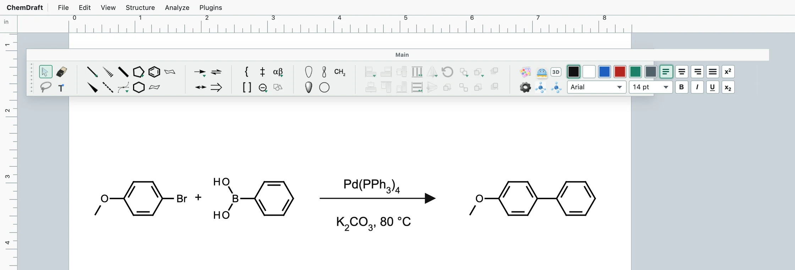
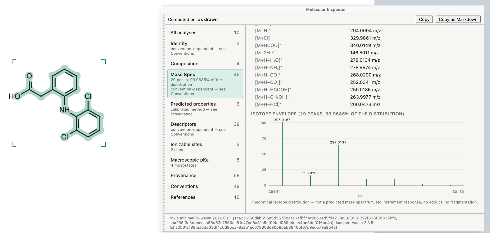
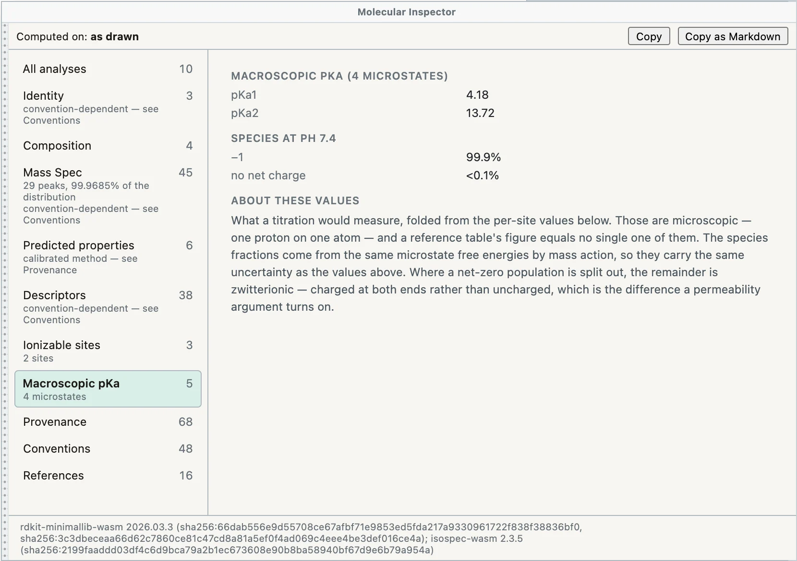
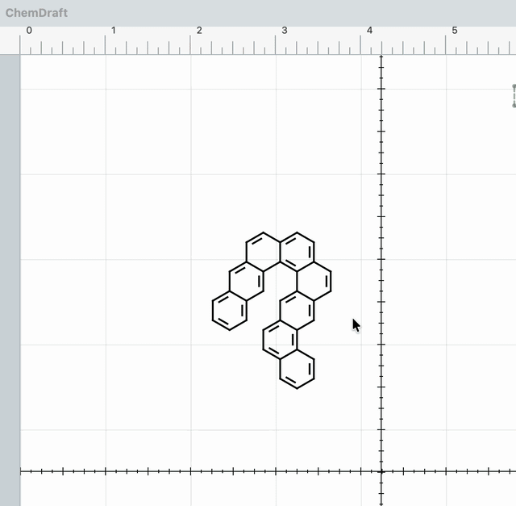

CD
ChemDraft
A lightweight, open-source chemical drawing app for macOS. It is built around local files and a plugin architecture, with drawing, layout, export, and chemistry tools kept in clear boundaries.
Download latest DMGFeatures
What ChemDraft does.
Every screenshot below is the real app with real chemistry, not a mockup. They were taken in ChemDraft’s browser preview build, which runs the same drawing and analysis code as the Mac app.
{kind=link}

01 Draw
- Paste SMILES, get structures. One SMILES lands where your pointer is, and a pasted list is laid out as a grid of editable molecules.
- Hover hotkeys. Point at an atom or bond and press a number to attach or fuse a ring, sprout a wedge, or add a carbonyl.
- Reaction arrows that mean something. Reaction, equilibrium, resonance, retrosynthesis and no-reaction arrows, with reagent text that subscripts formulas for you.
- Toolbars your way. Rearrange the tool palettes, build your own toolsets, and customize the Main toolbar in place.
{kind=link}

02 Inspect
- About sixty properties, offline. Formula, average and monoisotopic mass, InChI and InChIKey, descriptors and predicted properties, all computed by RDKit running inside the app.
- Isotope envelopes and ion m/z. The theoretical isotope pattern (from IsoSpec) and common adduct m/z values for the structure you drew.
- Every number shows where it came from. A Provenance section names each method, engine version and fingerprint, and Copy as Markdown carries that record along with the numbers.
- It says what it did not compute. Analyses that do not apply to your structure are listed as declined or not computed, so a missing number is never silent.
- Your structure, as drawn. Results describe exactly what is on the page; a salt-stripped or neutralized form is a separate, named interpretation you choose.
{kind=link}

03 Predict
- pKa, built in. Estimated pKa values and the charge-state mix at pH 7.4, from a model trained for ChemDraft and combined across protonation microstates.
- Site by site. The Ionizable sites view shows the per-atom values that the macroscopic numbers are built from.
- NMR prediction as a plugin. The free NMR predictor plugin gives estimated ¹H and ¹³C shifts from NMRShiftDB2-derived statistics; its ¹H multiplicities are first-order estimates, not measurements.
{kind=link}

04 Spin 3D
- From flat to 3D and back. Spin 3D builds a real 3D conformer with RDKit, lets you turn it with the mouse, and flattens the view you pick back onto the page.
- Depth you can read. Bonds nearer to you draw darker and thicker, so the shape still reads in a flat figure.
- Force-field cleanup. Selectable refinement modes trade speed for how much strain is relaxed.
05 Open
- Free and open source. The app is Apache-2.0, and the full source and history are on GitHub.
- Local files, no account. Documents are files on your Mac, and there is nothing to sign in to.
- Plugins with permissions. Each plugin declares what it may touch, bundled analyzers run in their own worker, and packages install from a file through the Plugin Manager.
- Formats in and out. Opens ChemDraft documents and CDXML; exports SVG, PDF, PNG, JPEG, BMP, GIF, TIFF, CDXML, SDF and SMILES; copies SMILES, InChI, InChIKey, MOL and CDXML.
- Updates in the app. Signed app updates are offered from inside ChemDraft, and the NMR plugin gets its updates in the app too.
- Platform
- Apple Silicon Macs only (arm64).
- Package
- DMG from the latest GitHub release.
- Trust
- Developer ID signed and notarized by Apple, so it opens without Gatekeeper warnings.
- Updates
- Built-in Sparkle updates check the signed appcast; updates are offered in the app.
- License
- Apache-2.0
About
Drawing first, without a large platform around it.
ChemDraft is early software, but its desktop app already centers the drawing workspace: bonds, chains, atom labels, rings, brackets, arrows, page layout, and a selected-molecule editor. Its plugin system is there for work that does not need to become part of the drawing core.
- FilesLocal document work stays at the center; compatibility formats are handled as formats, not as the app’s source of truth.
- ExportSVG, PDF, PNG, JPEG, BMP, GIF, TIFF, CDXML, SDF, and SMILES export are implemented.
- 3DSpin 3D is included with selectable refinement modes.
- PluginsPlugins run through a managed runtime with a Plugin Manager and permission boundaries.
Support
The source is the support record.
If something does not work, open an issue with the app version, your macOS version, Mac model, and the steps that reproduce it. The release page is also the place to find prior builds and notes.